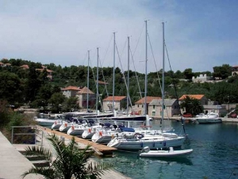
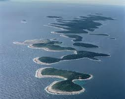
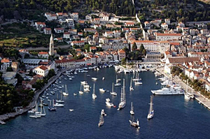
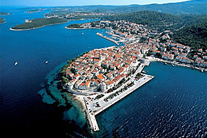
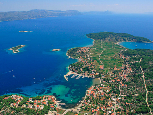

>> ADRIATYK, wrzesieñ 2009 <<
W ostatni weekend sierpnia dotarlismy do Splitu. Ustawilismy sie w kolejkê do promu na Solte. Po godzinie p³ynniêcia, przycumowaniu, przejechaliœmy samochodami do ma³ej mariny po drugiej stronie
zatoczki w miejscowoœci Rogaè. Przy odbiorze jachtu, okaza³o siê, ¿e mamy siódmego pasa¿era „na gapê”, ma³¹ szar¹ mysz.
Obs³uga mariny za³atwi³a nam kwatery na l¹dzie, a sama uda³a siê na polowanie na „ma³ego zwierza”. W niedzielê podstawili nam now¹ ³ódkê Sahara/Oceanis 393, poniewa¿ mysz okaza³a siê cwañsza od myœliwych.
W ten sposób straciliœmy jeden dzieñ ¿eglugi, ale za to zwiedziliœmy okoliczne knajpki.
W poniedzia³ek ruszyliœmy w stronê Hvaru i wczesnym popo³udniem dotarliœmy do ma³ej zatoczki na wyspie Sv.Klement, najwiêkszej w malowniczym archipelagu Pakleni Otoci.
Nastêpnego dnia rano zaatakowaliœmy Hvar. Ja w porcie rybackim szybciutko przerzuci³em szpej nurkowy na ³ódkê Dinki i pop³ynêliœmy na nura do Czerwonych Jaskiñ. Reszta za³ogi uda³a siê na zwiedzanie Hvaru.
Popo³udniu poszliœmy na obiadek do knajpy u Juseppe, a wieczorem zwiedzaliœmy drink-bary na g³ównej promenadzie –bulwarze Hvaru. ¯ycie nocne koñczy siê jak zwykle trochê po wschodzie s³oñca,
my jednak wracaj¹c po „æmaku” do jachtu, zrobiliœmy niemal¿e aborda¿ na s¹siedni¹ ³ódkê, wiadomo w nocy wszystkie s¹ takie same. Rano ruszyliœmy dalej do ma³ej zatoczki, tu¿ obok Czerwonych Jaskiñ, na k¹piel w czyœciutkiej lazurowej wodzie.
Na wieczór zrobiliœmy krótki przeskok do ma³ej zatoczki na wyspie Šcedro. W zatoce znajduje siê jedna konoba z tradycyjn¹ kuchni¹ chorwack¹, g³ównie ryby. Na wzgórzu po lewej stronie od wejœcia znajduj¹ ciê ruiny ma³ej cerkiewki,
od której pochodzi nazwa zatoki – Monastir. Nastêpnym etapem naszej eskapady by³a wyspa Korèula i miasto Korèula
 – miniatura Dubrownika. Na noc stanêliœmy w Luka Banja, w zatoce tu¿ przed obronnymi murami Korèuli. Rano szybki przeskok do mariny ACI, zakupy i zwiedzanie starej czêœci miasta, równie¿ domu Marco Polo.
Po po³udniu pop³ynêliœmy do odleg³ej ok. 4nm Lumbardy,
gdzie jest ma³a, kameralna marina. Miasteczko jest popularne wœród artystów, pisarzy, malarzy, ciche i spokojne ze star¹, typow¹ architektur¹ z kafejkami i restauracjami wokó³ zatoki. Na bulwarze na M.Glavicy ma swoj¹ bazê nurkow¹
Milenko Marukiè MM-Sub, któr¹ warto odwiedziæ.
<